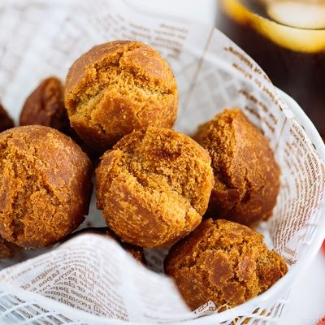

Sata Andagi

Original recipe from Just One Cookbook
Ingredients
- 1 large egg
- 1/3 cup black sugar
- 1 tsp. vegetable oil
- 1 cup cake flour
- 1/8 tsp. sea salt
- 1 tsp. baking powder
- 3 cups vegetable oil
Directions
- Gather all ingredients.
- In a bowl combine your egg, 1/3 cup black sugar and whisk together until it's dissolved.
- Add your 1 tsp. of oil and whisk together.
- Sift your 1 cup cake flour, 1 tsp. baking powder, and 1/8 kosher salt.
- Use a spatula to mix the dry and wet ingredients and let the dough rest for an hour.
- Bring 3 cups oil to 300-320 degrees.
- Grab some oil to rub in your palms to prevent the dough from sticking.
- When the oil has reached the proper temperature, scoop the dough and roll into a ball (ping pong size).
- Once done rolling, put dough balls in oil (but not too many at once).
- When the dough balls start to float and are golden brown, pick them up and drain the rest of the oil using a wire rack or paper towel.
- Let cool for and ENJOY!
Contact Me
allison.sobol@umontana.edu
32 Campus Drive
Missoula, MT 59812